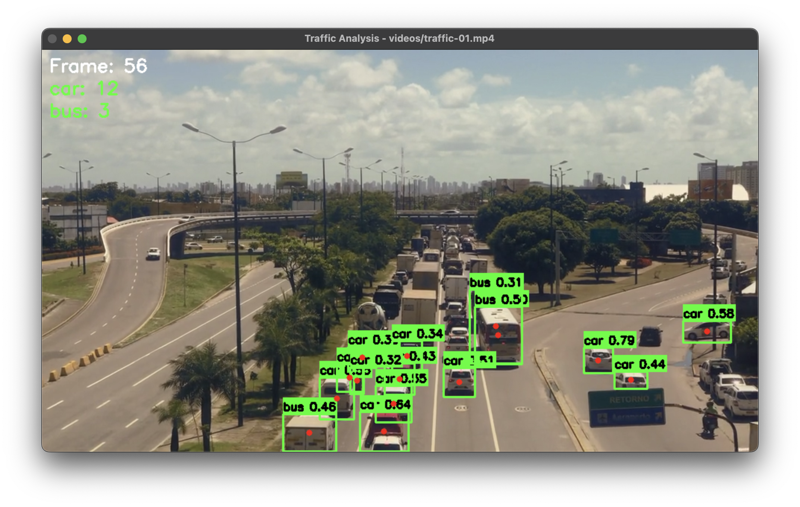

Basic Object Detection
import sys
import os
from yolozone.objects import ObjectDetector
import cv2
# Initialize detector
detector = ObjectDetector(model="yolov8n.pt")
# Read image
img = cv2.imread("image.jpg")
# Detect objects
results = detector.detect_objects(img, conf=0.3)
# Draw detections
img, detections = detector.draw_detections(img, results)
# Print detections
for class_name, conf, box in detections:
print(f"Found {class_name} with confidence {conf:.2f}")

Example output showing detected objects with bounding boxes and labels
Video Object Detection
def process_video(video_path, detector):
cap = cv2.VideoCapture(video_path)
while True:
ret, frame = cap.read()
if not ret:
break
# Detect objects
results = detector.detect_objects(frame, conf=0.3)
# Draw detections
frame, detections = detector.draw_detections(frame, results)
# Count objects by class
counts = detector.count_objects(results)
# Display counts
y_pos = 30
for cls, count in counts.items():
cv2.putText(frame, f"{cls}: {count}",
(10, y_pos), cv2.FONT_HERSHEY_SIMPLEX,
0.8, (0, 255, 0), 2)
y_pos += 30
cv2.imshow("Object Detection", frame)
if cv2.waitKey(1) & 0xFF == ord('q'):
break
cap.release()
cv2.destroyAllWindows()Key Features
- Real-time object detection in video streams
- Object counting by class
- On-screen statistics display
- Configurable confidence threshold
Filtered Detection
# Only detect specific classes
vehicle_classes = ['car', 'truck', 'bus', 'motorcycle']
# Detect objects
results = detector.detect_objects(img, conf=0.3)
# Draw only vehicles
img, detections = detector.draw_detections(
img, results, classes=vehicle_classes)
# Count vehicles
counts = detector.count_objects(results, classes=vehicle_classes)
print("Vehicle counts:", counts)Tips
- Filter classes to improve performance
- Adjust confidence threshold based on needs
- Use appropriate model size for your application
- Process at suitable resolution for speed/accuracy balance
Performance Optimization
- Use smaller models (yolov8n.pt) for faster inference
- Process at reduced resolution for real-time applications
- Filter relevant classes to reduce processing
- Use appropriate device (CPU/GPU) based on hardware
- Batch process images when possible